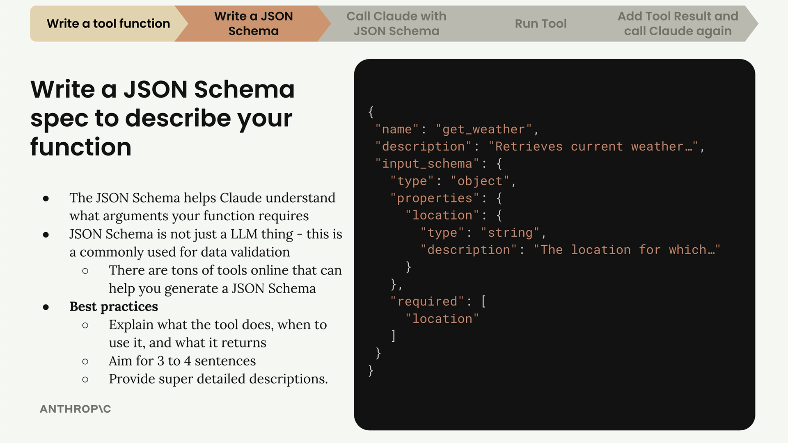
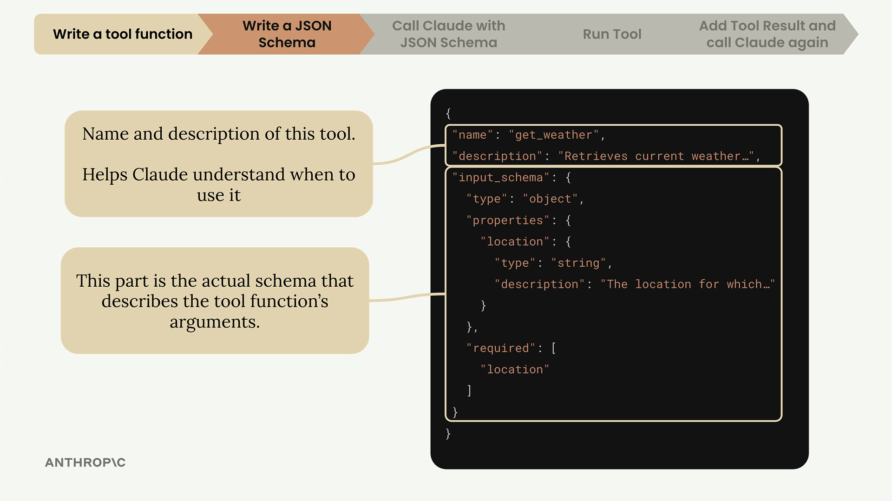
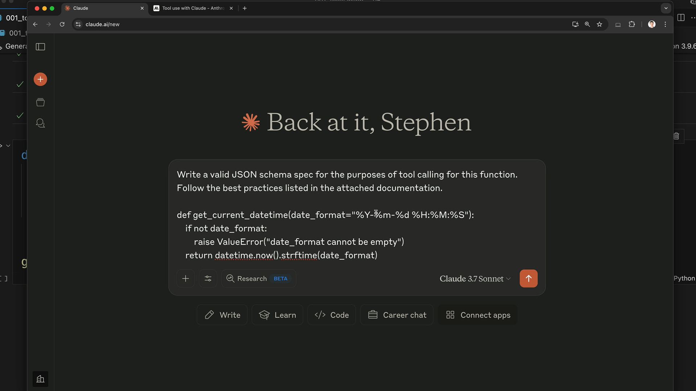

Схемы инструментов
Чему научитесь
Видео 4:39 и текст урока
К концу урока вы сможете:
- назвать три части описания инструмента:
name,description,input_schema; - писать хорошие описания инструментов;
- генерировать схему с помощью Claude и типизировать её через
ToolParam.
Видео и текст урока.
Смотреть урок на Skilljar Tool schemas · 4:39Написав функцию-инструмент, нужно создать JSON-схему, которая сообщает Claude, какие аргументы ожидает функция и как ею пользоваться. Эта схема — документация, которую Claude читает, чтобы понять, когда и как вызывать ваши инструменты.
Что такое JSON Schema
JSON Schema не придумана специально для ИИ или вызова инструментов — это распространённая спецификация для проверки данных, которая существует уже много лет. Сообщество ИИ взяло её на вооружение, потому что ею удобно описывать параметры функций и проверять данные.

get_weather: input_schema — объект с обязательным строковым свойством location.Полное описание инструмента состоит из трёх основных частей:
name— понятное, говорящее имя инструмента (например,"get_weather");description— что делает инструмент, когда его использовать и что он возвращает;input_schema— собственно JSON-схема аргументов функции.
Как писать хорошие описания
Описание инструмента очень важно: по нему Claude понимает, когда использовать вашу функцию. Рекомендации:
- 3–4 предложения о том, что делает инструмент;
- описать, когда Claude должен его использовать;
- объяснить, какие данные он возвращает;
- подробно описать каждый аргумент.

get_weather с пометками: name, description и input_schema.Простой способ получить схему
Вместо того чтобы писать JSON-схемы с нуля, можно поручить это самому Claude. Порядок такой:
- скопируйте код функции-инструмента;
- откройте Claude и попросите написать JSON-схему для вызова инструментов;
- приложите в качестве контекста документацию Anthropic по tool use;
- пусть Claude сгенерирует правильно оформленную схему по рекомендациям.
Промпт может быть примерно таким: «Write a valid JSON schema spec for the purposes of tool calling for this function. Follow the best practices listed in the attached documentation.»

get_current_datetime, рядом — вкладка с документацией по tool use.Схема в коде
Когда Claude сгенерирует схему, скопируйте её в свой файл с кодом. Удобная схема именования:
def get_current_datetime(date_format="%Y-%m-%d %H:%M:%S"):
if not date_format:
raise ValueError("date_format cannot be empty")
return datetime.now().strftime(date_format)
get_current_datetime_schema = {
"name": "get_current_datetime",
"description": "Returns the current date and time formatted according to the specified format",
"input_schema": {
"type": "object",
"properties": {
"date_format": {
"type": "string",
"description": "A string specifying the format of the returned datetime. Uses Python's strftime format codes.",
"default": "%Y-%m-%d %H:%M:%S"
}
},
"required": []
}
}
Называйте схему по шаблону «имя функции + _schema» — так схемы легко держать в порядке и сопоставлять с функциями.
Типизация
Для лучшей проверки типов импортируйте и используйте тип ToolParam из библиотеки Anthropic:
from anthropic.types import ToolParam
get_current_datetime_schema = ToolParam({
"name": "get_current_datetime",
"description": "Returns the current date and time formatted according to the specified format",
# ... rest of schema
})
Для работы это не обязательно, но так вы избежите ошибок типов при передаче схемы в API Claude, и код станет надёжнее.
Дальше
Схема готова — теперь отправим её в API и разберём новый вид ответа: сообщение из нескольких блоков.
Оригинал урока: Tool schemas.